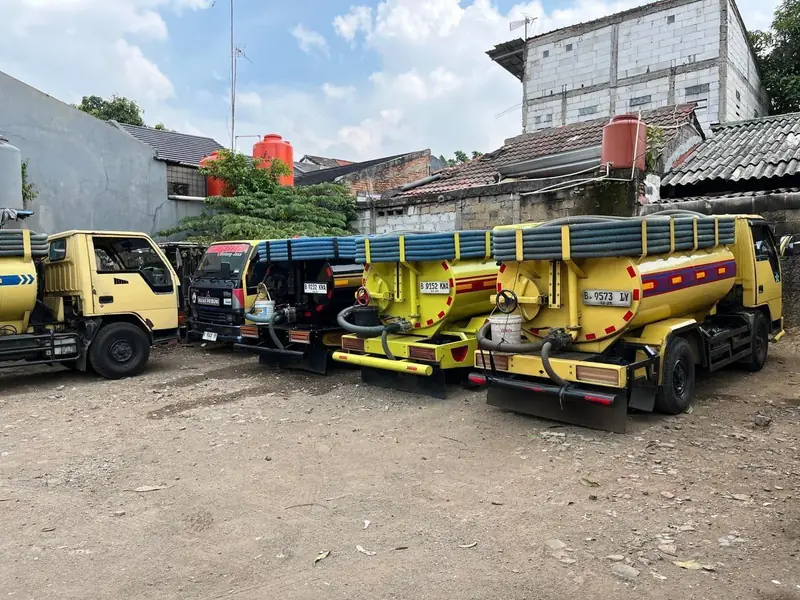
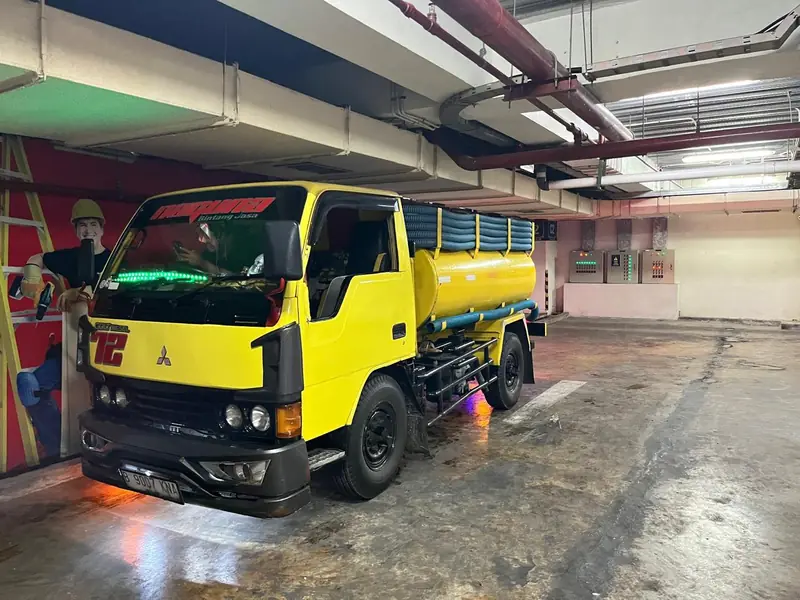
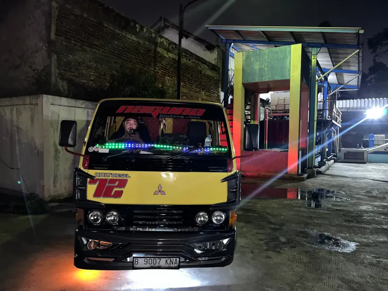

Sedot WC Bekasi: WC Mampet atau Septic Tank Penuh? Kami Datang ke Rumah Anda.
Jasa sedot WC, sedot septic tank, dan saluran mampet. Harga dikonfirmasi lebih dulu, tidak ada kejutan saat pembayaran.
Konsultasi gratis. Tinggal kirim pesan, kami balas.Harga Jelas, Bukan Jebakan
Angka di bawah adalah kisaran awal.
Saluran Mampet
- WC, wastafel, saluran got
- Pengecekan titik sumbatan
Sedot WC / Septic Tank
- Rumah tangga, ruko, gedung, pabrik
- Gang sempit oke, selang panjang tersedia
Sedot Limbah Lemak
- Grease trap & limbah dapur resto
- Jadwal di luar jam operasional
Cara Pesan, Cuma 3 Langkah
Tidak perlu isi formulir panjang.
Kirim pesan
Klik tombol WhatsApp, ceritakan masalah dan lokasi Anda.
Dapat kepastian harga
Kami konfirmasi harga sebelum armada berangkat.
Armada datang
Pekerjaan dikerjakan di lokasi sampai tuntas.
Kenapa Pilih Naguna?
Yang Anda butuhkan saat WC bermasalah: cepat, jelas, tidak ribet.
Buka 24 jam
WC bermasalah tidak kenal waktu. Hubungi kami kapan saja lewat WhatsApp.
Harga transparan
Kisaran harga ditampilkan terbuka dan dikonfirmasi di awal.
Gang sempit bisa
Selang panjang tersedia untuk lokasi yang sulit dijangkau.
Rumah sampai restoran
Melayani rumah tangga, ruko, gedung, pabrik, hingga limbah dapur.
Armada & Tim Kami
Armada sendiri, siap datang ke lokasi Anda.



Pertanyaan Seputar Sedot WC di Bekasi
Jawaban singkat sebelum Anda menghubungi kami.
Berapa harga sedot WC di Bekasi?
Sedot WC dan septic tank mulai dari Rp450.000, saluran mampet mulai dari Rp350.000, dan sedot limbah lemak mulai dari Rp950.000. Harga akhir tergantung lokasi, jarak, dan volume, dan dikonfirmasi sebelum armada berangkat.
Apakah bisa masuk ke gang sempit?
Bisa. Akses gang sempit tidak masalah, dan selang panjang tersedia untuk lokasi yang sulit dijangkau.
Apakah buka 24 jam?
Ya. Anda bisa menghubungi kami kapan saja lewat WhatsApp atau telepon.
Area mana saja yang dilayani?
Bekasi Kota dan sekitarnya. Kirim lokasi Anda lewat WhatsApp untuk memastikan.
Bagaimana cara memesan?
Klik tombol WhatsApp, ceritakan masalah dan lokasi Anda, lalu kami konfirmasi harga sebelum berangkat.
Area Layanan
Mencakup Bekasi Kota dan sekitarnya. Lokasi Anda tidak tercantum? Tanyakan saja.
- Bekasi Kota
- Bekasi Barat
- Bekasi Timur
- Bekasi Utara
- Bekasi Selatan
- Sekitar Bekasi
Jangan Tunggu Sampai Meluap
Kirim satu pesan singkat, kami bantu carikan solusinya.
Chat WhatsApp Sekarang